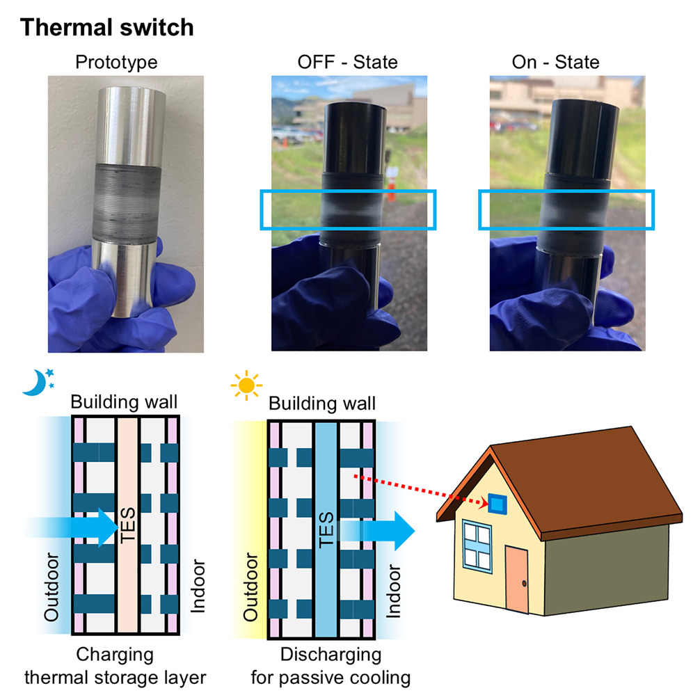
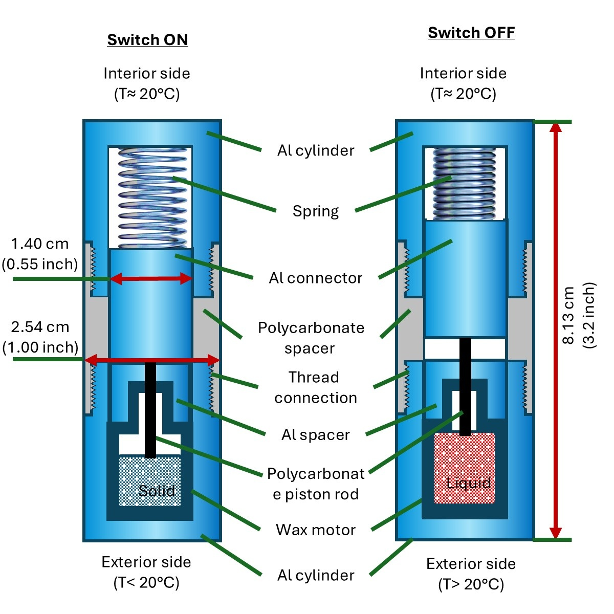
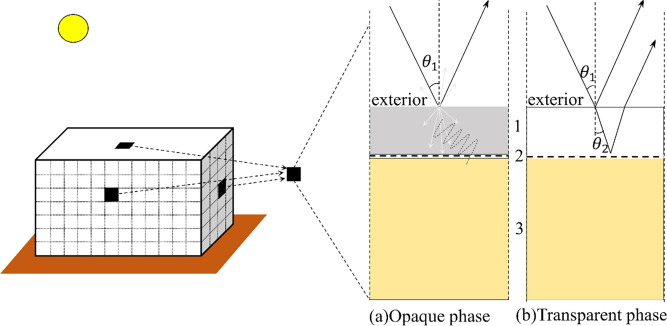

About Me
I am Director of the R&D Center at CHINA OVERSEAS GRAND OCEANS LOWCARBON TECHNOLOGY CO., LTD. (COGO LowCarbon Technology) in Qianhai, Shenzhen, where I joined in June 2026. I lead research and development in building energy saving and carbon reduction, renewable energy (photovoltaics and energy storage), and AI-integrated building energy management.
From February 2024 to May 2026, I was a Postdoctoral Researcher in Mechanical Engineering at the National Laboratory of the Rockies (NLR), formerly the National Renewable Energy Laboratory (NREL), where I worked on advanced building thermal technologies. I earned my Ph.D. in Civil Engineering from Worcester Polytechnic Institute (WPI). During my M.S. studies at Hunan University, I conducted research on the structural analysis of offshore wind turbine foundations.
I welcome academic collaboration and knowledge exchange on building energy, low-carbon technologies, and related research initiatives.
My research interests include:
- Building Energy, Carbon & AI: Building energy saving & carbon reduction, renewable energy (PV & storage), and AI-integrated building energy management
- Dynamic Building Envelopes: passive/active thermal switches, adaptive thermal control
- Thermal Energy Storage (TES): PCMs, solid-solid PCMs, sorbent thermal batteries.
- Radiative Cooling: daytime radiative cooling, thermo-optical and switchable coatings.
- Building Energy Modeling: EnergyPlus, building-scale simulation, techno-economic analysis.
- Advanced Building Insulation: cement-based insulation foams, porous thermal composites.
- AI-Driven Building Thermal Management: ML-based energy prediction, surrogate modeling, data-driven analysis.
Highlight #1: Thermal Switches based Dynamic Building Envelopes
We developed a passive thermal switch embedded in building insulation that automatically changes its heat-flow path based on ambient temperature. This technology enhances the effectiveness of PCMs in thermal energy storage, helping to reduce building heating and cooling loads.
- Passive, insertable thermal switches are developed and experimentally characterized.
- One switch per 100 in2 of insulation provides a thermal conductivity switching ratio of 5.7.
- Switches enhance utilization of PCM-thermal storage and improve indoor thermal comfort.


Highlight #2: Thermo-optically responsive SS-PCM coatings
Our thermo-optical solid–solid phase change material (SS-PCM) coatings absorb excess heat when the building is warm and release it when cooler, moderating indoor temperature swings and lowering HVAC energy demand. We applied a bioinspired surface-optimization approach and machine-learning-based design to develop porous SS-PCM coatings with enhanced optical and thermal performance for adaptive building envelopes.
- Thermo-optical solid–solid PCM exhibits switchable cooling and solar heating effects in response to the ambient temperature.
- The SS-PCM can achieve radiative cooling effect when integrated with Polydimethylsiloxane (PDMS) and Silver (Ag).


Highlight #3: Active thermal switch and AI+ building thermal management.
A journal paper is going to be submitted soon and a provisional US patent has been filed.
Highlight #4: Thermal storage embedded heat pump optimization
(Ongoing)
Education and Work Experience
- Director of R&D Center, China Overseas Grand Oceans LowCarbon Technology Co., Ltd. (中宏低碳), Jun 2026 – present
- Postdoctoral Researcher–Mechanical Engineering, National Laboratory of the Rockies (NLR, formerly NREL), Feb 2024 – May 2026
- PhD in Civil Engineering, Worcester Polytechnic Institute, Aug 2019 – Dec 2023
- Structural Engineer, POWERCHINA Kunming Engineering Corporation Limited, Aug 2016 – Aug 2019
- Master in Structural Engineering, Hunan University, Sep 2013 – Jun 2016
- Bachelor in Civil Engineering, Hunan University, Sep 2009 – Jun 2013
Publications
- Zhiying Xiao, Sajith Wijesuriya, Ravi Kishore, et al. Development and energy savings analysis of active thermal switches with thermal storage for dynamic building envelopes in residential buildings. Cell Reports Sustainability, 2026. link
- Xiao, Zhiying, Kishore, Ravi Anant, Booten, Chuck. Demonstration and Characterization of Insertable Passive Thermal Switches for Dynamic Building Envelopes. Cell Reports Physical Science, 2025. link presentation
- Zhiying Xiao, R. Bousselham, M. Tao, et al. Machine Learning-Optimized Porous Thermally Responsive SS-PCM with Switchable Transparency for Adaptive Building Envelope Coatings. Energy and Buildings, 2025. link
- Zhiying Xiao, Sajith Wijesuriya, Kishore, Ravi Anant, et al. Experimental Characterization and Potential Energy Savings Benefits of Insulated Cladding for US Residential Buildings. Energy and Buildings, 2025. link
- Zhiying Xiao, P. Mishra, A. Mahdavi Nejad, M. Tao, S. Granados-Focil, S. Van Dessel. Thermal Optimization of a Novel Thermo-Optically Responsive SS-PCM Coating for Building Enclosures. Energy and Buildings, 2021. link
- R. Bousselham, Z. Xiao, M. Tao, et al. A Bioinspired Approach for Adaptive Solid-Solid Phase Change Material Coatings with Optimized Surface Features for Passive Thermal Regulation. Solar Energy Materials and Solar Cells, 2026. link
- Kishore, Ravi Anant, Xiao, Zhiying, Booten, Chuck, et al. Retrofittable Thermal Switches for Dynamic Building Envelopes Integrated with Thermal Energy Storage. 2024 ACEEE Summer Study on Energy Efficiency in Buildings. link
- El Ouaragli J, Xiao, Zhiying, Tao M, Granados-Focil S, Van Dessel S. A Novel Passive Polymer-Sorbent Thermal Battery for Low-Temperature Energy Applications: A Numerical Feasibility Study. Journal of Energy Storage, 2022. link
- Zhong W, Deng L, Xiao Zhiying. Flow Past a Rectangular Cylinder Close to a Free Surface. Ocean Engineering, 2019. link
- Deng Lu, Xiao Zhiying, et al. Numerical Simulation of Dynamic Response for Offshore Wind Turbines Including Fluid-Structure Interaction. Journal of Hunan University: Natural Science, 2015. (In Chinese) pdf
- Deng Lu, Xiao Zhiying, et al. Intact Stability Analysis of a Semi-Submersible Platform for Floating Offshore Wind Turbines. Journal of Harbin Engineering University, 2016. (In Chinese) pdf
- Deng Lu, Wang Biao, Xiao Zhiying, et al. Conceptual Design and Performance Analysis of a Reinforced Concrete Floating Platform for Offshore Wind Turbine. Journal of Huazhong University of Science and Technology (Natural Science Edition), 2016. (In Chinese) pdf
- Deng Lu, Huang Mingxi, Xiao Zhiying, et al. Analysis on Frequency Response of Floating Wind Turbine Considering the Influence of Aerodynamic Damping. Journal of Hunan University: Natural Science, 2016. (In Chinese) pdf
- Deng Lu, Wang Biao, Xiao Zhiying, et al. Review of Offshore Floating Wind Turbine Concepts. Journal of Marine Engineering, 2018. (In Chinese) pdf
- Wang Biao, Bi Tao, Xiao Zhiying, et al. Summary of Foundation Design for Offshore Floating Wind Turbine. Electric Power Survey and Design, 2018. (In Chinese) pdf
Peer Review
- Journal
- Applied Energy;
- Energy and Buildings;
- Engineering Applications of Artificial Intelligence;
- Journal of Building Engineering;
- Case Studies in Thermal Engineering;
- Solar Energy;
- Building Simulation;
- International Journal of Green Energy;
- Journal of Energy Storage;
- The International Journal of Ventilation;
- Advances in Mechanical Engineering;
- Buildings;
- Energies;
- Sustainability;
- Advances in Building Energy Research;
- Journal of Engineering for Sustainable Buildings and Cities;
- Journal of Physics: Energy
- Conference
- ASME Energy Sustainability Conference 2025;
- Building Simulation Conference 2025
- (Open to review more)